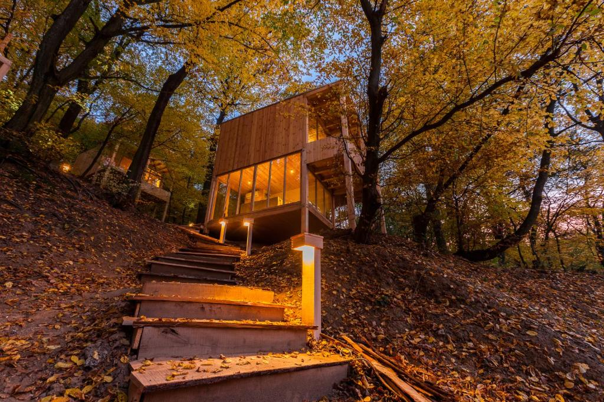

Noszvaj Treehouses
Főoldal
Áraink
Kapcsolat
Programok
Természet és kaland vár rád a Noszvaji treehouse szálláson! Ez a varázslatos menedék az erdő mélyén rejtőzik, egy csodálatos fakunyhóban, ahol az idő lassabban telik, és a mindennapi nyüzsgés távol kerül. A szállásnak egyedi bája van, hiszen a fák között emelkedik, mintha a természet maga ölelné körbe. A kényelmes faágyakból a madarak csicsergését hallgathatod, miközben a lombkoronák szelíd susogása az ébredésedet köszönti minden reggel. A szállás apró részletei is a természet harmóniáját tükrözik: fafaragott bútorok, természetes anyagokból készült dekorációk és hangulatos lámpák teszik teljessé az élményt.
A Noszvaji treehouse szállás ideális helyszín mindazok számára, akik szeretik a kihívásokat és a természet közelségét. Itt lehetőséged van felfedezni a környék erdeit, túrázni a hegyekben vagy egyszerűen csak pihenni és feltöltődni a természet nyugalmával.
Noszvaj Treehouses
"A fakunyhók intimitása és a természet ölelésében nyújtott vendégszeretet lenyűgöző volt. Csodálatos élmény volt minden pillanat, és biztosan visszatérünk!"
A Noszvaji treehouse szállás valódi gyöngyszem a természetközeli szálláshelyek között. Az egyedülálló hangulatú fakunyhókban való elhelyezkedés mindenkit lenyűgöz, hiszen itt igazán testközelből tapasztalhatjuk meg az erdő varázsát. A szállás kényelmes és stílusos berendezése pedig tökéletes harmóniát teremt a modern luxus és a természet között.
A Noszvaji treehouse szálláson minden adott ahhoz, hogy kikapcsolódjunk és feltöltődjünk. A friss levegő és a madárcsicsergés kíséretében ébredni minden reggel igazi felüdülés. A személyzet figyelmessége és rugalmassága pedig hozzátesz az itt töltött idő élményéhez.
A szállás kiváló kiindulópont lehet túrákhoz és kirándulásokhoz is, hiszen a környező táj csodálatos látnivalókat kínál. Az esti órákban pedig a fakunyhók kényelmes teraszairól élvezhetjük a csillagos égbolt látványát, miközben a távoli erdő csendje ölel körül bennünket. Összességében a Noszvaji treehouse szállás egy igazi oázis a hétköznapi nyüzsgés és a városi zajok között, ahol nyugalmat és feltöltődést találhatunk a természet ölelésében.